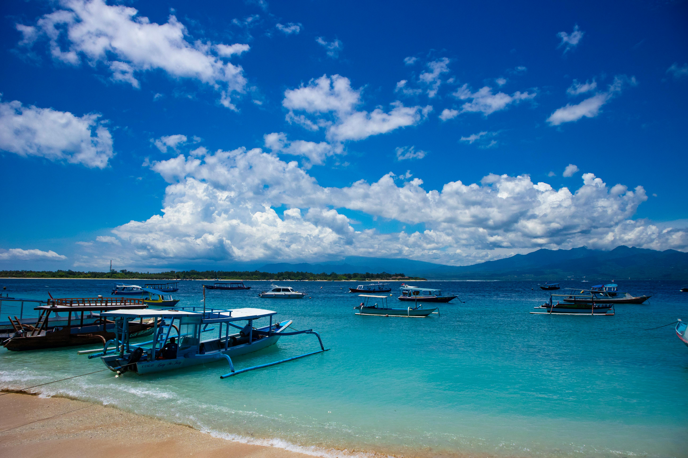
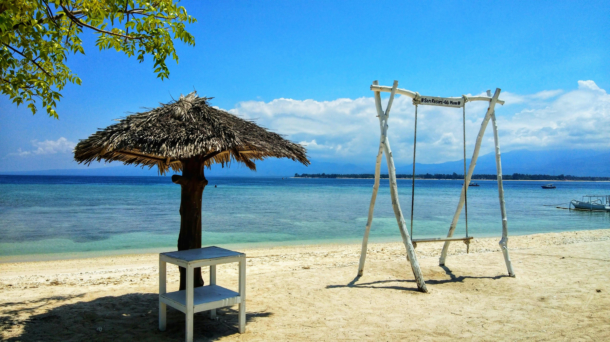
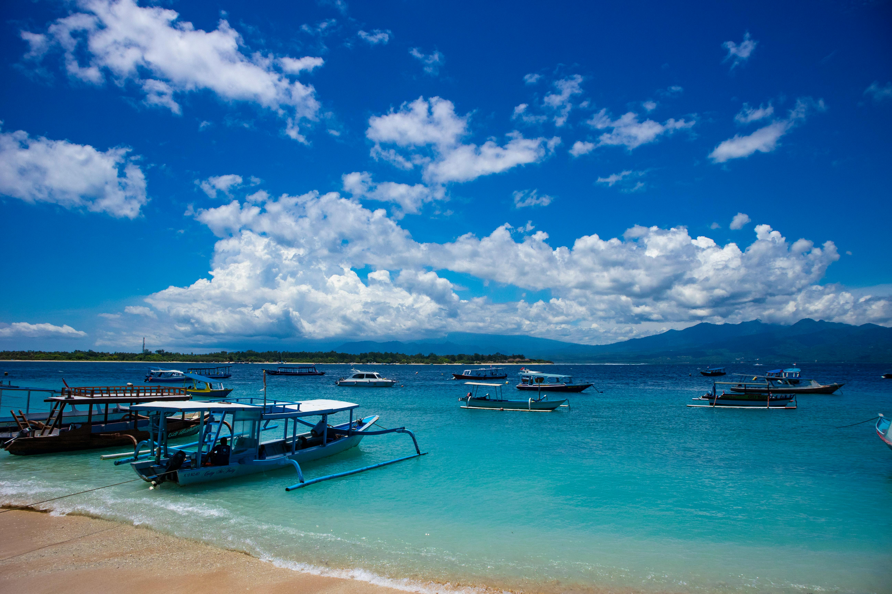
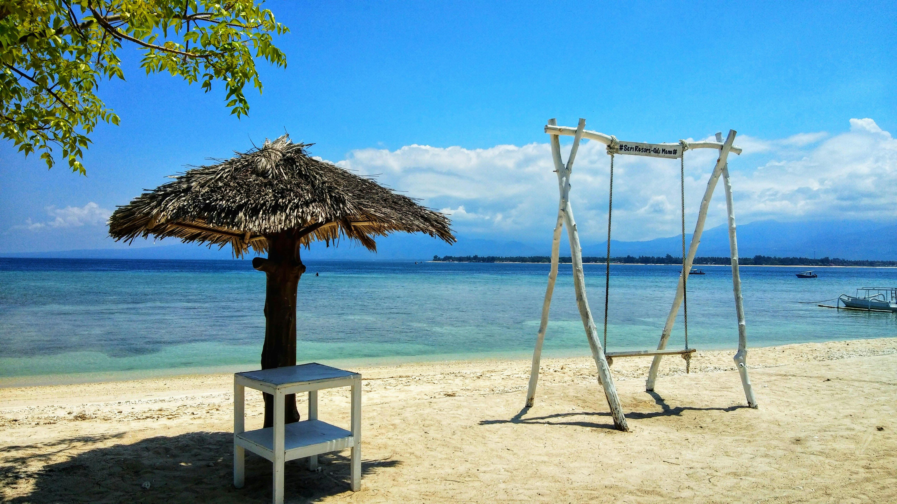
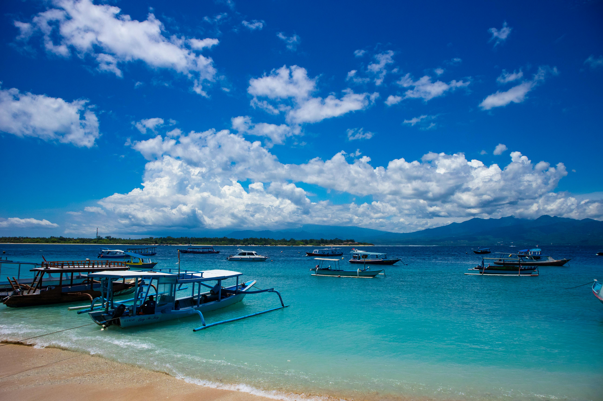
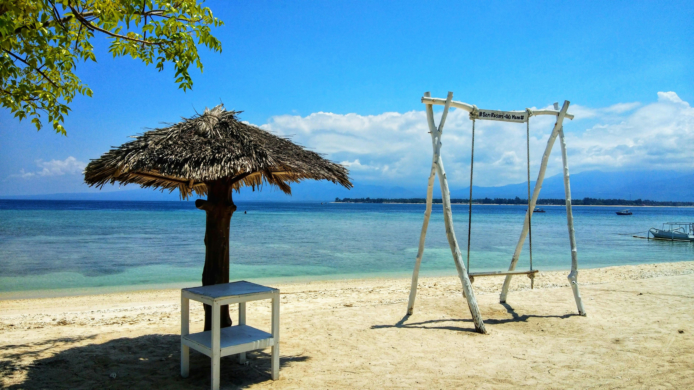
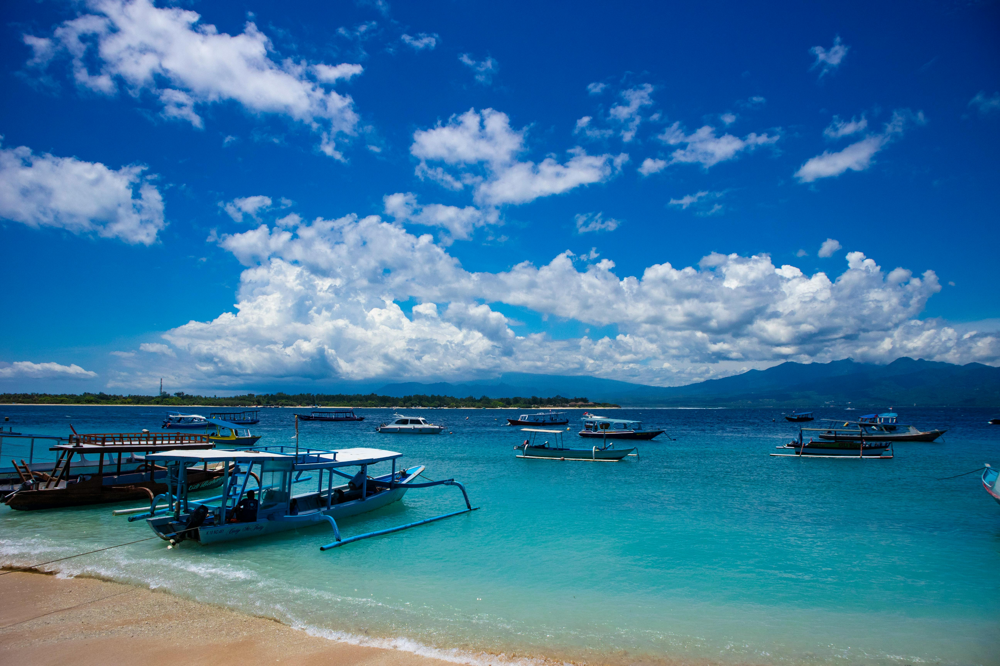
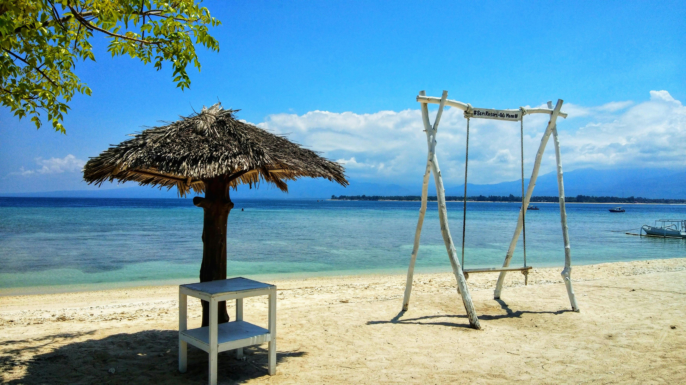

.jpg)
.jpg) 







Gili Trawangan adalah pulau terbesar dan paling populer dari tiga gugusan Gili (bersama Gili Air dan Gili Meno) yang terletak di lepas pantai barat laut Pulau Lombok, Nusa Tenggara Barat. Pulau ini dikenal dengan pasir putihnya yang halus, air laut sebening kristal, dan kehidupan bawah laut yang luar biasa indah. Meski ukurannya kecil, Gili Trawangan memiliki atmosfer yang hidup dan dinamis. Pulau ini bebas dari kendaraan bermotor, sehingga transportasi utama di sini adalah sepeda, cidomo (kereta kuda khas Lombok), dan berjalan kaki. Hal ini memberikan suasana yang tenang dan bebas polusi, cocok bagi wisatawan yang ingin melarikan diri dari hiruk-pikuk kota. Aktivitas utama di Gili Trawangan adalah snorkeling, diving, dan island hopping. Terumbu karang yang mengelilingi pulau dihuni oleh berbagai jenis ikan tropis, penyu laut, bahkan hiu karang. Banyak dive center yang menawarkan kursus menyelam bagi pemula hingga penyelam profesional. Tak hanya itu, wisatawan juga bisa menikmati panorama bawah laut hanya dengan snorkeling di dekat pantai. Di sore hari, pengunjung dapat menikmati pemandangan matahari terbenam yang memukau dari sisi barat pulau, bahkan Gunung Agung di Bali terlihat jelas saat cuaca cerah. Malam harinya, Gili Trawangan berubah menjadi pusat hiburan dengan deretan bar, live music, beach party, hingga pertunjukan fire dance di tepi pantai. Gili Trawangan adalah destinasi yang ideal bagi siapa saja – dari backpacker hingga pasangan honeymoon yang mencari petualangan, relaksasi, dan pengalaman tropis yang tak terlupakan.